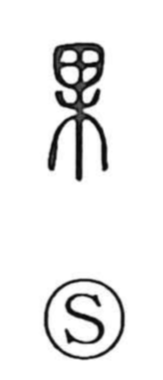

果

Uncategorized
Kun: hatasu, hateru, hate | On: ka
fruit ・ result ・ to accomplish ・ to end
Explanation
Originally a pictograph showing a ripe fruit set atop a tree, this character first named the fruit or nut itself. Because a blossom must cease before fruit forms, it naturally came to suggest growth brought to completion—what has been effected and thus reaches its end. From this image flow the senses of fruit and nuts, as well as result, to accomplish, and to come to an end.